Criativo

Tenho a capacidade de pensar fora da caixa e gosto de explorar novas abordagens.
Metódico

Valorizo a organização e a estruturação em todas as tarefa que faço, gerando processos bem definidos.
Pragmático
Ao avaliar alguma situação, foco em soluções práticas e eficazes para considerando os objetivos da equipe.
Mente Aberta

Sempre sou recepetivo a novas ideias e perspectivas, pois elas enriquecem qualquer debate.
Empenhado

Dedicado a alcançar os melhores resultados no o que faço, mesmo em situações desafiadoras.
Imparcialidade
Entendo a importância de tomar decisões objetivas e justas, baseadas em critérios transparentes e igualitários.